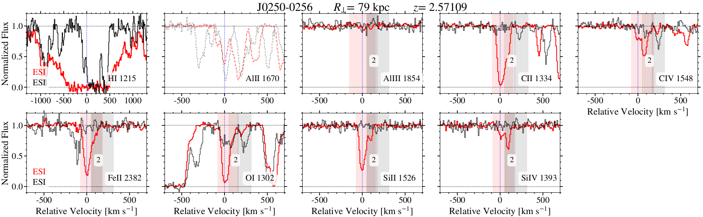

One of my main interest involves the study of diffuse gas surrounding galaxies (Circumgalactic Medium; CGM). My previous projects used absorption line systems from background quasars to understand the chemical evolution of dim galaxies and their halos throughout cosmic time. Specifically, I have worked extensively on studies involving Damped Lyman-alpha systems and their surroundings.
Circumgalatic Medium of Damped Lyman-α Systems

We use medium- and high-resolution spectroscopy of close pairs of quasars to analyze the circum- galactic medium (CGM) surrounding 32 damped Lyα absorption systems (DLAs). The primary quasar sightline in each pair probes an intervening DLA in the redshift range 1.6 < zabs < 3.5, such that the secondary sightline probes absorption from Lyα and a large suite of metal-line transitions (including O I, C II, C IV, Si II, and Si IV) in the DLA’s CGM at transverse distances 24 kpc < R < 284 kpc. We can then use these to compare the gas metallicities and kinematics of the CGM to that of the host DLA.
On the Sizes of Damped Lyman-α Systems
We are are studying the potential sizes of DLAs at z ~ 2. Stay tuned for updates on this work!